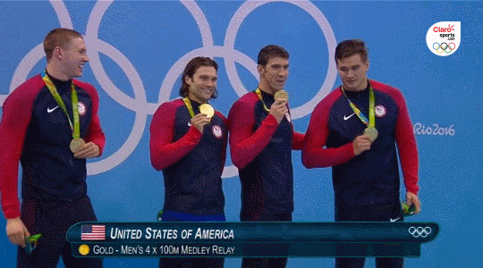

Estilo Crol o Libre
En los relevos estilo, un nadador distinto nada cada serie de la prueba usando un estilo diferente. En las pruebas estilo individuales, los nadadores hacen mariposa, espalda, braza y libre en ese orden. En los relevos estilo, el orden es espalda, braza, mariposa y libre. Las otras pruebas de relevos son los 4 x 100 m y los 4 x 200 m libres.Un relevo en natación de cuatro nadadores, por lo general, sigue esta estrategia: el segundo más rápido, el tercero más rápido, el más lento, y luego el más rápido (ancla). Sin embargo, no es raro ver que el más lento en la segunda posición, dejándolo de la siguiente manera: el segundo más rápido, el más lento, el tercero más rápido, y por último el más rápido, o una ascendente: el más lento, el tercero más rápido, el segundo más rápido y como siempre el último el más rápido.